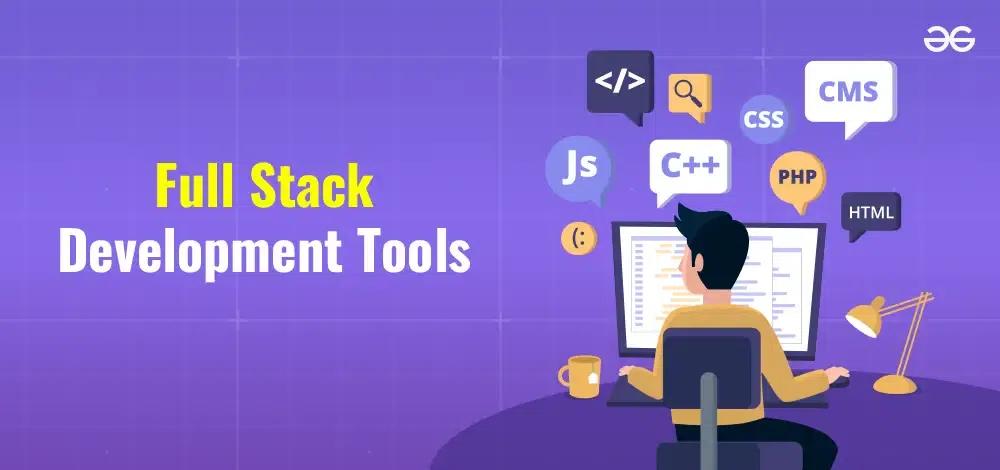

Full-stack web development refers to the end-to-end process of building both the user-facing frontend (client-side) and the behind-the-scenes backend (server-side and database) of a software application. A full-stack developer has the comprehensive skills required to design, code, host, and maintain a functional, fully integrated web application from start to finish